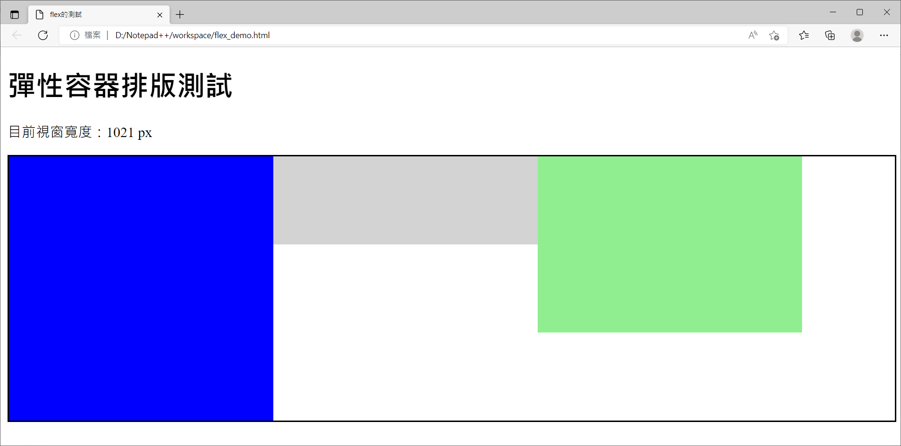
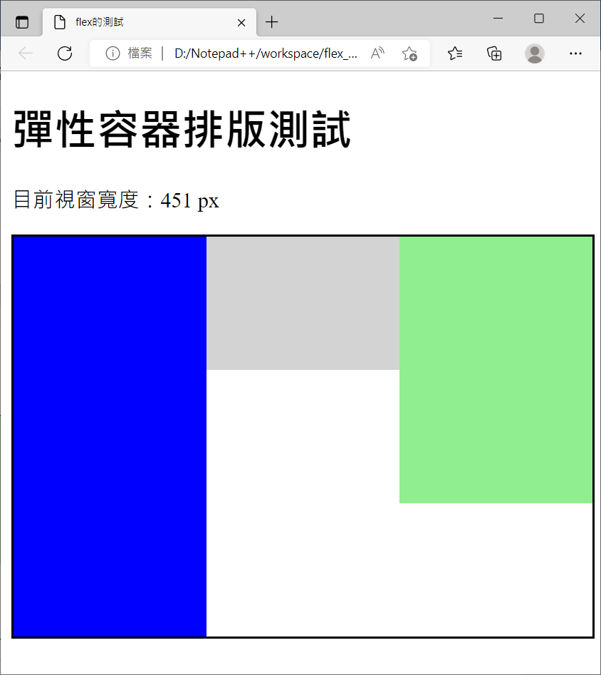
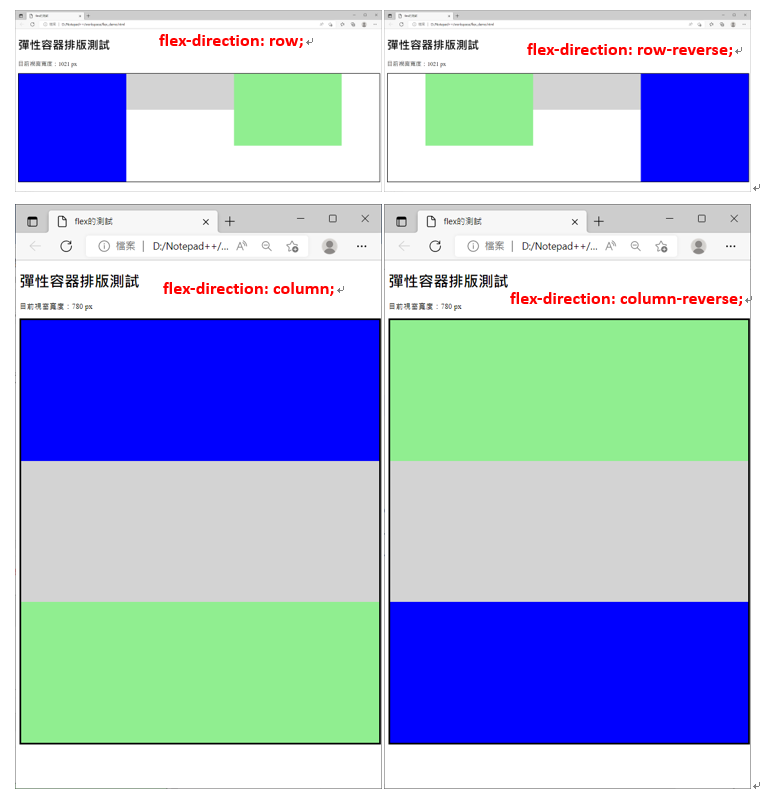
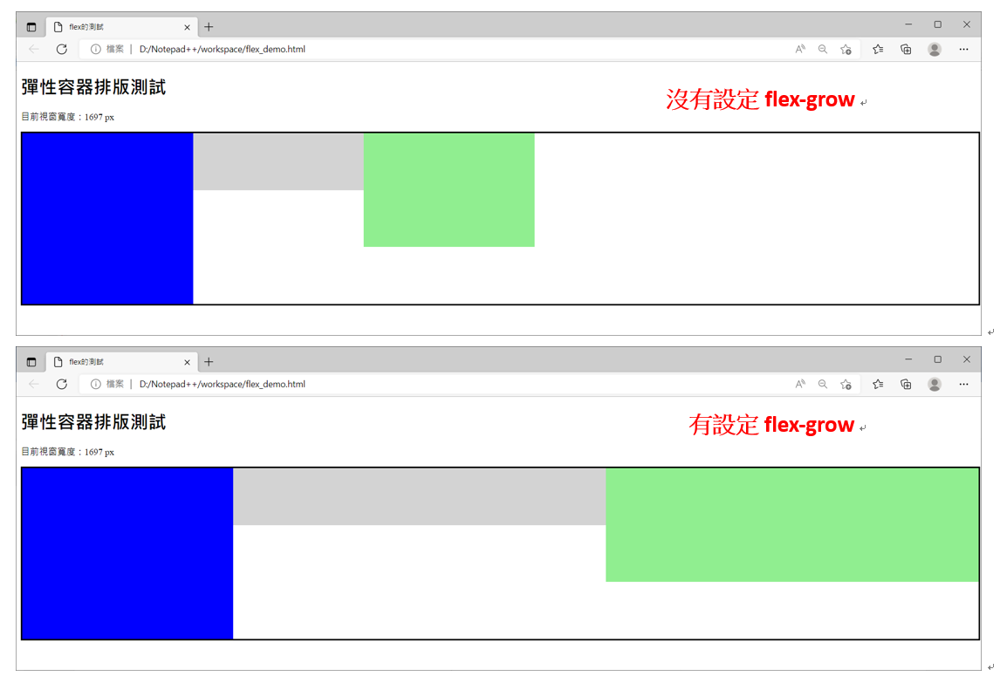
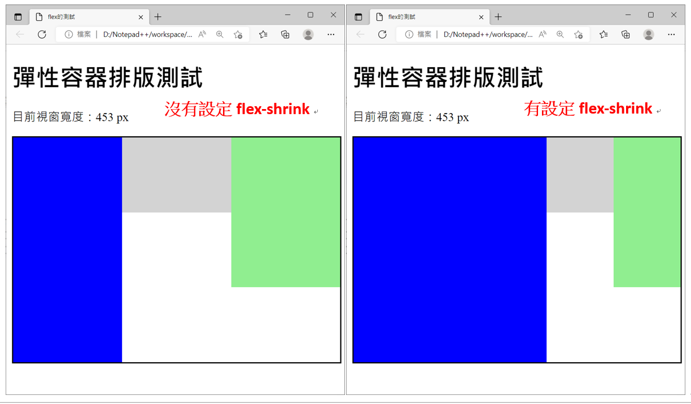

flex-direction、flex-grow與flex-shrink
〈CSS之flex排版〉第一回
想必大家都曾經碰過一些網頁，點進去之後所有的內容通通擠在左手邊，然後右邊就留下一大片的空白；或是在放大顯示比例的時候很多網頁內容就跑到視窗的外面，得滾動下方橫向的捲軸才能看得到。雖然說不會影響網頁本身的內容，但是看起來總覺得不是那麼舒服。好在有各式各樣的排版方式可以解決上面提到的問題。其中CSS3之後出現了新的排版觀念：flex container，又稱為彈性容器。它是個很方便的排版方式，以下就要來介紹它的一些使用方式囉～
設定display屬性值為flex
這是最初也是最重要的一點了！萬一忘記設定這個值，那之後的所有排版設定通通都會沒有效果，然後心裡面就會有滿滿的問號，怎麼都沒啥差別？？首先把所有要用flex排版的元素通通用一個大框框給包住(通常是在<div>…</div>之間)，然後針對這個大框框div的display屬性值設為flex。直接來看一下例子：
程式碼：
<!doctype html>
<html>
<head>
<title>flex的測試</title>
<meta charset="utf-8">
<!--直接把CSS的內容寫在同一份檔案(html)中-->
<style>
.container {
width:100%; /*外圍大框框的寬度=視窗寬度*/
display:flex; /*很重要！ 一定要寫*/
border-style:solid; /*外圍大框框加上黑色框線*/
}
/*設定三個小區塊各自的大小與背景顏色*/
.div1 {background:blue; flex-basis:300px; height:300px;}
.div2 {background:lightgray; flex-basis:300px; height:100px;}
.div3 {background:lightgreen; flex-basis:300px; height:200px;}
</style>
</head>
<body>
<h1>彈性容器排版測試</h1>
<p id="now_width"></p>
<div class="container">
<div class="div1" ></div>
<div class="div2" ></div>
<div class="div3"></div>
</div>
<script>
/*得知目前的視窗寬度像素值*/
document.getElementById('now_width').innerHTML = "目前視窗寬度：" + innerWidth + " px"
/*視窗寬度改變時觸發的事件*/
window.onresize=function() {
document.getElementById('now_width').innerHTML = "目前視窗寬度：" + innerWidth + " px";
}
</script>
</body>
</html>
實際執行結果：


我們利用flex-basis設定每個小區塊的寬度，用height設定它們各自的高度，然後在兩種不同的視窗寬度下看看執行的結果。在視窗寬度是1021 px的情況下，因為三個小區塊總共的寬度是300*3=900 px，所以剩下的空間就會留白，並且按照預設的方式放在大框框的右側。當視窗寬度小於900 px時，三個小區塊會等比例的縮小，就變成圖2的樣子。
當然，假如上面的排版方式不是我們想要的，那麼還有很多其他設定可以使用。下面就要來一個個舉例：
想換一下排列的方向：flex-direction
在大框框的CSS(.container)中加上flex-direction屬性，並且設定不同的值：
- row
- row-reverse
- column
- column-reverse
附上每個屬性值的效果

比較奇怪的一點是，當排列方向變成column或是column-reverse時，每個小區塊的寬度跟高度都變成一樣的？這是因為flex-basis這個屬性代表的是「排列方向上的寬度/高度大小」，所以在排列方向是垂直向的時候，flex-basis屬性覆蓋掉原本height的設定，所以變成大家的高度都是300 px了；至於寬度方面，因為大框框設定的寬度等於視窗寬度，而此時每個小區塊的寬度並沒有設定的值，所以就自動跟大框框一樣囉。
不想要留白？flex-grow
回到最開始的設定。在視窗寬度是1021 px時會看到最右邊有一小塊空白的區域。如果不想要那塊空白的話就可以在每個小區塊多加上flex-grow屬性，它代表每個小塊對於留白的部分可以分到多少比例(大概是瓜分領土的概念)。
例如我們作了以下的設定：
- 藍色區塊(.div1)： flex-grow: 1;
- 灰色區塊(.div2)； flex-grow: 5;
- 綠色區塊(.div3)： flex-grow: 5;
以下是實際執行的結果

很明顯的在沒有設定flex-grow時右邊有一大塊的空白。設定flex-grow之後，根據上面的例子，藍色區塊可以拿到1/(1+5+5)=1/11的土地，而另外兩個區塊各可以拿到5/11，於是就得到第二張圖的結果。
不想要等比例的縮小？flex-shrink
還記得視窗寬度是451 px時大家都等比例縮小的情況嗎？針對這個點可以利用flex-shrink屬性來做調整。舉個例子：
- 藍色區塊(.div1)： flex-shrink: 1;
- 灰色區塊(.div2)： flex-shrink: 5;
- 綠色區塊(.div3)： flex-shrink: 5;
結果如下

有設定flex-shrink時，藍色區塊需扣掉超出的空間(300*3-453=447 px)的1/11，而其他兩塊各需扣掉超出空間的5/11，所以執行結果如上。
還有很多其他的設定，就等下回揭曉囉(｡･∀･)ﾉﾞ

國立交通大學材料系奈米科技碩士班畢業(現在應該稱國立陽明交通大學ʕ •ᴥ•ʔ)。雖然非資工相關科系畢業，但本著對資工領域的興趣而開始自學相關知識，目前則專攻網頁相關知識，如HTML5、CSS3、JavaScript、Node.js。以跨領域學習者的角度來介紹資工領域相關的知識，除了加深自己對相關知識的理解，也期望同是跨領域學習的朋友們因為瀏覽我的文章而有更多不一樣的觀點可以參考。